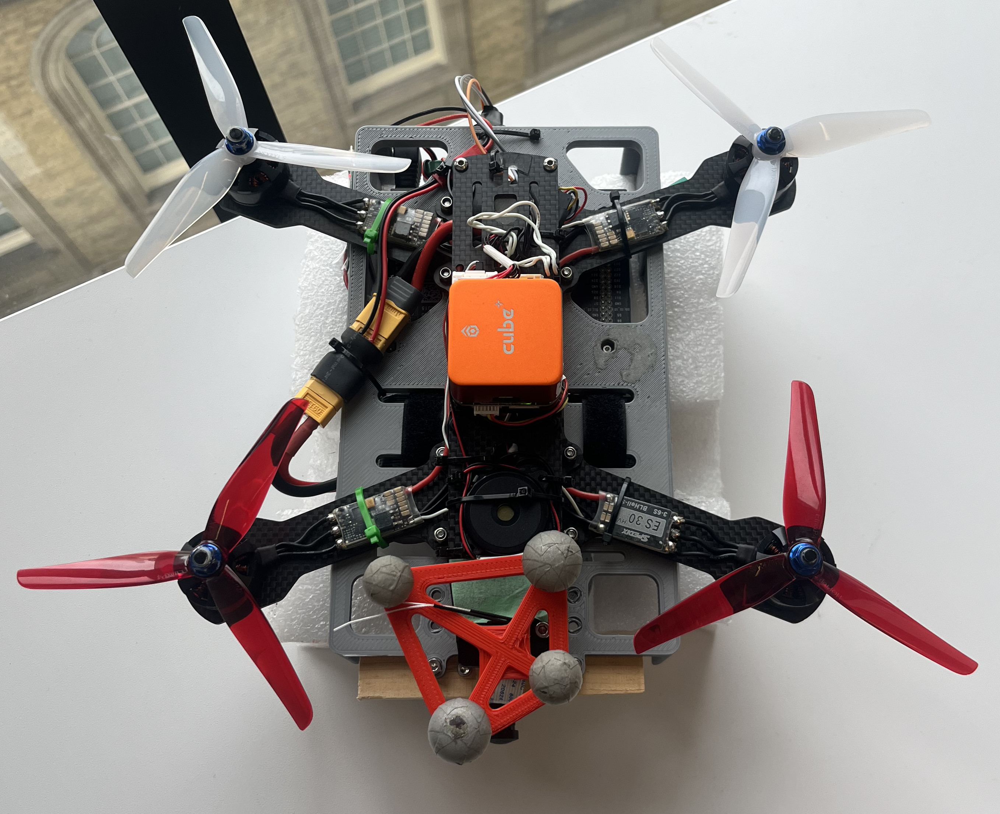
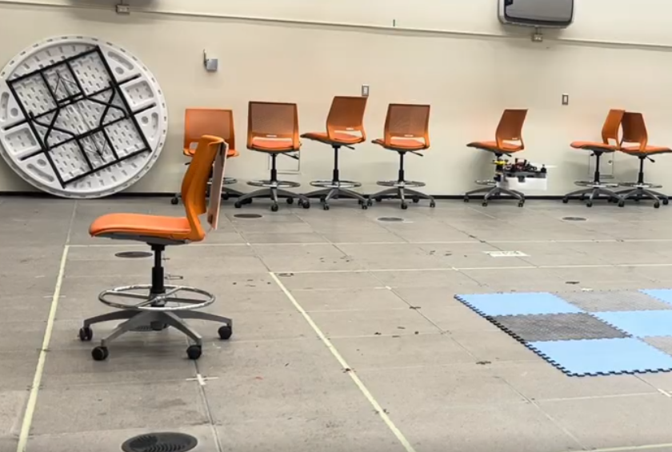
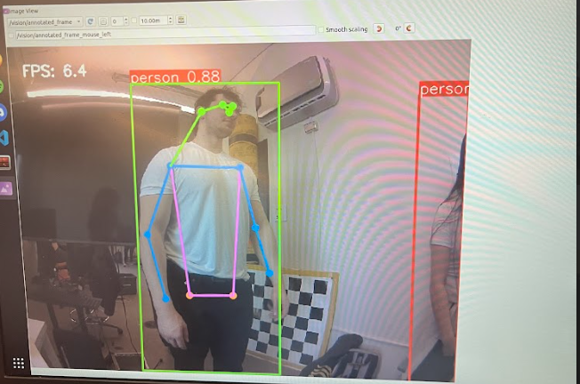

Capstone Drone Tracking, Fall Detection, and Signal Transmission
An autonomous drone system built on PX4, Jetson Nano, ROS2, and MAVROS, delivering three core capabilities: person tracking, fall detection, and alert transmission. Built as a capstone project, the course provided a comprehensive foundation in autonomous drone systems. Prior to developing the solution, three flight exercises were completed to verify the drone was airworthy and fully operational. My team's final solution addresses a real-world problem: a drone that detects falls by elderly individuals and dispatches automated alerts to caregivers.


Left: Capstone drone hardware Right: Drone in hover state.
Project Overview
Three objectives, one flight stack
The original capstone goals were tracking, fall detection, and signal transmission. We were able to achieve all three, while obstacle avoidance remained an optional extension rather than a primary deliverable. The drone ran on a PX4 flight controller with a Jetson Nano companion computer, using ROS2 for high-level control and MAVROS as the bridge between MAVLink messages and ROS topics.
The system was designed to stay practical under time and hardware constraints. Instead of depending on depth from disparity maps, tracking used a SONY IMX camera and an AprilTag-equipped chair to keep the target inside the camera field of view. Localization came from Vicon, giving the most reliable state estimate for testing and tuning.
Tracking Pipeline
State machine control and distance estimation
The main ROS2 node subscribed to drone state and local position through MAVROS, then published position and velocity commands to guide flight. Behavior was organized as a finite-state machine with transitions controlled by ROS2 service calls: GROUND → CONNECT → TAKEOFF → HOVER → FOLLOW → LAND → GROUND, with ABORT available whenever needed. In FOLLOW, perception estimated the chair’s image size and adjusted speed to preserve a stable following distance.
Distance was approximated with the pinhole-camera relation distance ≈ (object size × focal length) / bbox height. That choice was intentional: it was faster to implement and more robust than relying on disparity depth after the earlier crashes. During testing, we first ran the entire pipeline offline in TEST_MODE with annotated camera output, then tuned one direction at a time at low speed before allowing the full movement set.
Safety checks were always active: hard cutoffs on maximum height and velocity, plus smoothing on frame-to-frame bounding box jitter, helped prevent unstable commands from reaching the drone.

Fall Detection
YOLOv8-pose for reliable event detection
Fall detection was implemented with YOLOv8-pose, which adds keypoint estimation on top of bounding boxes so the system can reason about body posture rather than just object presence. We originally planned to use a chair-based demonstration here too, but reliable knock-over tests inside the netting were too inconsistent, so we split the demo: tracking used the chair, while fall detection was validated with a human subject while the drone was stationary.
The detector used several conditions to reduce false positives. A fall was suspected if the person’s bounding box became wider than tall, or if the body orientation became significantly horizontal while the head dropped quickly relative to body size across frames. To avoid triggering on bending over or brief motion spikes, the system required multiple consecutive frames before announcing a fall.
In practice, the logic looked for a sustained pattern rather than a one-frame anomaly. If a fall was suspected, a counter incremented and the alert only fired after the condition persisted for four consecutive frames. The detection output was simple and visible: a red bounding box with FALL DETECTED text on the feed, plus terminal logs for confirmation.

System Reliability
Rebuilds, retuning, and disciplined testing
The timeline mattered as much as the final demo. Flight Exercise 1 (FE1) exposed issues with the Jetson and SD card, then FE2 and FE3 progressed before the first crash forced a rebuild with new propellers and a new frame. A second crash led to a full rebuild with a new drone, new Jetson, new SD card, more QGroundControl retuning, and a change in internet switching before the final pass through FE1, FE2, FE3, camera testing, fall detection, and AprilTag tracking.
.pt to .engine for Jetson performance and enabled maximum clocks with sudo nvpmodel -m 0 and sudo jetson_clocks.One of the clearest lessons was that autonomous flight is mostly a reliability problem. A system can look correct in code and still fail under vibration, restart conditions, sensor noise, or bad assumptions about compute headroom. The capstone ended up being as much about disciplined debugging and safety-first iteration as it was about autonomy.